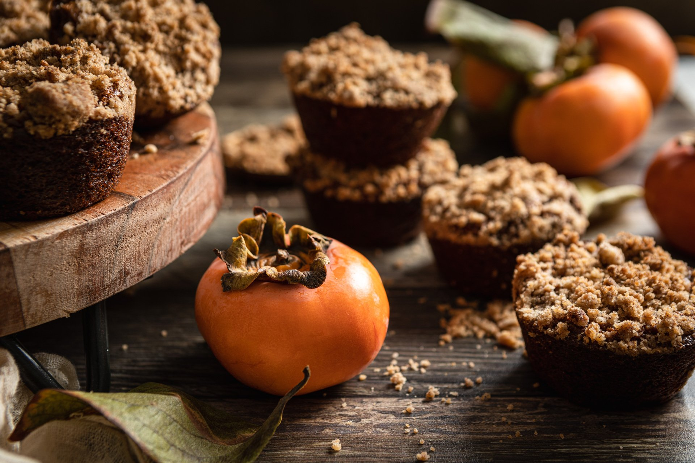

Persimmon Muffins
- 34 Minutes
- 10 Ingredients
- 12 Serving
Breakfast muffins using fresh persimmon puree. A great fall recipe for brunch.

Breakfast muffins using fresh persimmon puree. A great fall recipe for brunch.
A great alternative to pumpkin pie, especially for those cheesecake fans out there. Serve topped with whipped cream.

This is a nice rich mac and cheese. Serve with a salad for a great meatless dinner. Hope you enjoy it.